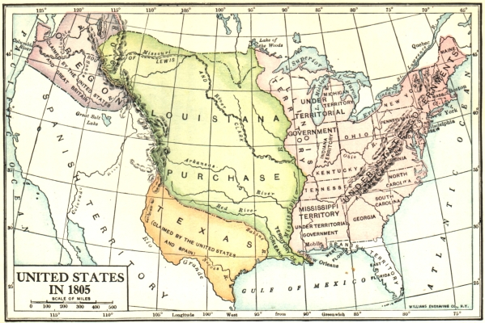
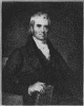

Republican Principles and Policies
Opposition to Strong Central Government. —Cherishing especially the agricultural interest, as Jefferson said, the Republicans were in the beginning provincial in their concern and outlook. Their attachment to America was, certainly, as strong as that of Hamilton; but they regarded the state, rather than the national government, as the proper center of power and affection. Indeed, a large part of the rank and file had been among the opponents of the Constitution in the days of its adoption. Jefferson had entertained doubts about it and Monroe, destined to be the fifth President, had been one of the bitter foes of ratification. The former went so far in the direction of local autonomy that he exalted the state above the nation in the Kentucky resolutions of 1798, declaring the Constitution to be a mere compact and the states competent to interpret and nullify federal law. This was provincialism with a vengeance. "It is jealousy, not confidence, which prescribes limited constitutions," wrote Jefferson for the Kentucky legislature. Jealousy of the national government, not confidence in it—this is the ideal that reflected the provincial and agricultural interest.
Republican Simplicity. —Every act of the Jeffersonian party during its early days of power was in accord with the ideals of government which it professed. It had opposed all pomp and ceremony, calculated to give weight and dignity to the chief executive of the nation, as symbols of monarchy and high prerogative.
Appropriately, therefore, Jefferson's inauguration on March 4, 1801, the first at the new capital at Washington, was marked by extreme simplicity. In keeping with this procedure he quit the practice, followed by Washington and Adams, of reading presidential addresses to Congress in joint assembly and adopted in its stead the plan of sending his messages in writing—a custom that was continued unbroken until 1913 when President Wilson returned to the example set by the first chief magistrate.
Republican Measures. —The Republicans had complained of a great national debt as the source of a dangerous "money power," giving strength to the federal government; accordingly they began to pay it off as rapidly as possible. They had held commerce in low esteem and looked upon a large navy as a mere device to protect it; consequently they reduced the number of warships. They had objected to excise taxes, particularly on whisky; these they quickly abolished, to the intense satisfaction of the farmers. They had protested against the heavy cost of the federal government; they reduced expenses by discharging hundreds of men from the army and abolishing many offices.
They had savagely criticized the Sedition law and Jefferson refused to enforce it. They had been deeply
offended by the assault on freedom of speech and press and they promptly impeached Samuel Chase, a justice of the Supreme Court, who had been especially severe in his attacks upon offenders under the Sedition Act. Their failure to convict Justice Chase by a narrow margin was due to no lack of zeal on their part but to the Federalist strength in the Senate where the trial was held. They had regarded the appointment of a large number of federal judges during the last hours of Adams' administration as an attempt to intrench Federalists in the judiciary and to enlarge the sphere of the national government.
Accordingly, they at once repealed the act creating the new judgeships, thus depriving the "midnight appointees" of their posts. They had considered the federal offices, civil and military, as sources of great strength to the Federalists and Jefferson, though committed to the principle that offices should be open to all and distributed according to merit, was careful to fill most of the vacancies as they occurred with trusted Republicans. To his credit, however, it must be said that he did not make wholesale removals to find room for party workers.
The Republicans thus hewed to the line of their general policy of restricting the weight, dignity, and activity of the national government. Yet there were no Republicans, as the Federalists asserted, prepared to urge serious modifications in the Constitution. "If there be any among us who wish to dissolve this union or to change its republican form," wrote Jefferson in his first inaugural, "let them stand undisturbed as monuments of the safety with which error of opinion may be tolerated where reason is left free to combat it." After reciting the fortunate circumstances of climate, soil, and isolation which made the future of America so full of promise, Jefferson concluded: "A wise and frugal government which shall restrain men from injuring one another, shall leave them otherwise free to regulate their own pursuits of industry and improvement and shall not take from the mouth of labour the bread it has earned. This is the sum of good government; and this is necessary to close the circle of our felicities."
In all this the Republicans had not reckoned with destiny. In a few short years that lay ahead it was their fate to double the territory of the country, making inevitable a continental nation; to give the Constitution a generous interpretation that shocked many a Federalist; to wage war on behalf of American commerce; to reëstablish the hated United States Bank; to enact a high protective tariff; to see their Federalist opponents in their turn discredited as nullifiers and provincials; to announce high national doctrines in foreign affairs; and to behold the Constitution exalted and defended against the pretensions of states by a son of old Virginia, John Marshall, Chief Justice of the Supreme Court of the United States.
The Republicans and the Great West
Expansion and Land Hunger. —The first of the great measures which drove the Republicans out upon this new national course—the purchase of the Louisiana territory—was the product of circumstances rather than of their deliberate choosing. It was not the lack of land for his cherished farmers that led Jefferson to add such an immense domain to the original possessions of the United States. In the Northwest territory, now embracing Ohio, Indiana, Illinois, Michigan, Wisconsin, and a portion of Minnesota, settlements were mainly confined to the north bank of the Ohio River. To the south, in Kentucky and Tennessee, where there were more than one hundred thousand white people who had pushed over the mountains from Virginia and the Carolinas, there were still wide reaches of untilled soil.
The Alabama and Mississippi regions were vast Indian frontiers of the state of Georgia, unsettled and almost unexplored. Even to the wildest imagination there seemed to be territory enough to satisfy the land hunger of the American people for a century to come.
The Significance of the Mississippi River. —At all events the East, then the center of power, saw no good reason for expansion. The planters of the Carolinas, the manufacturers of Pennsylvania, the importers of New York, the shipbuilders of New England, looking to the seaboard and to Europe for trade, refinements, and sometimes their ideas of government, were slow to appreciate the place of the West in national economy. The better educated the Easterners were, the less, it seems, they comprehended the
destiny of the nation. Sons of Federalist fathers at Williams College, after a long debate decided by a vote of fifteen to one that the purchase of Louisiana was undesirable.
On the other hand, the pioneers of Kentucky, Ohio, and Tennessee, unlearned in books, saw with their own eyes the resources of the wilderness. Many of them had been across the Mississippi and had beheld the rich lands awaiting the plow of the white man. Down the great river they floated their wheat, corn, and bacon to ocean-going ships bound for the ports of the seaboard or for Europe. The land journeys over the mountain barriers with bulky farm produce, they knew from experience, were almost impossible, and costly at best. Nails, bolts of cloth, tea, and coffee could go or come that way, but not corn and bacon. A free outlet to the sea by the Mississippi was as essential to the pioneers of the Kentucky region as the harbor of Boston to the merchant princes of that metropolis.
Louisiana under Spanish Rule. —For this reason they watched with deep solicitude the fortunes of the Spanish king to whom, at the close of the Seven Years' War, had fallen the Louisiana territory stretching from New Orleans to the Rocky Mountains. While he controlled the mouth of the Mississippi there was little to fear, for he had neither the army nor the navy necessary to resist any invasion of American trade.
Moreover, Washington had been able, by the exercise of great tact, to secure from Spain in 1795 a trading privilege through New Orleans which satisfied the present requirements of the frontiersmen even if it did not allay their fears for the future. So things stood when a swift succession of events altered the whole situation.
Louisiana Transferred to France. —In July, 1802, a royal order from Spain instructed the officials at New Orleans to close the port to American produce. About the same time a disturbing rumor, long current, was confirmed—Napoleon had coerced Spain into returning Louisiana to France by a secret treaty signed in 1800. "The scalers of the Alps and conquerors of Venice" now looked across the sea for new scenes of adventure. The West was ablaze with excitement. A call for war ran through the frontier; expeditions were organized to prevent the landing of the French; and petitions for instant action flooded in upon Jefferson.
Jefferson Sees the Danger. —Jefferson, the friend of France and sworn enemy of England, compelled to choose in the interest of America, never winced. "The cession of Louisiana and the Floridas by Spain to France," he wrote to Livingston, the American minister in Paris, "works sorely on the United States. It completely reverses all the political relations of the United States and will form a new epoch in our political course.... There is on the globe one single spot, the possessor of which is our natural and habitual enemy. It is New Orleans through which the produce of three-eighths of our territory must pass to market.... France, placing herself in that door, assumes to us an attitude of defiance. Spain might have retained it quietly for years. Her pacific dispositions, her feeble state would induce her to increase our facilities there.... Not so can it ever be in the hands of France.... The day that France takes possession of New Orleans fixes the sentence which is to restrain her forever within her low water mark.... It seals the union of the two nations who in conjunction can maintain exclusive possession of the ocean. From that moment we must marry ourselves to the British fleet and nation.... This is not a state of things we seek or desire. It is one which this measure, if adopted by France, forces on us as necessarily as any other cause by the laws of nature brings on its necessary effect."
Louisiana Purchased. —Acting on this belief, but apparently seeing only the Mississippi outlet at stake, Jefferson sent his friend, James Monroe, to France with the power to buy New Orleans and West Florida.
Before Monroe arrived, the regular minister, Livingston, had already convinced Napoleon that it would be well to sell territory which might be wrested from him at any moment by the British sea power, especially as the war, temporarily stopped by the peace of Amiens, was once more raging in Europe. Wise as he was in his day, Livingston had at first no thought of buying the whole Louisiana country. He was simply dazed when Napoleon offered to sell the entire domain and get rid of the business altogether. Though staggered by the proposal, he and Monroe decided to accept. On April 30, they signed the treaty of cession, agreeing to pay $11,250,000 in six per cent bonds and to discharge certain debts due French citizens, making in all
approximately fifteen millions. Spain protested, Napoleon's brother fumed, French newspapers objected; but the deed was done.
Jefferson and His Constitutional Scruples. —When the news of this extraordinary event reached the United States, the people were filled with astonishment, and no one was more surprised than Jefferson himself. He had thought of buying New Orleans and West Florida for a small sum, and now a vast domain had been dumped into the lap of the nation. He was puzzled. On looking into the Constitution he found not a line authorizing the purchase of more territory and so he drafted an amendment declaring "Louisiana, as ceded by France,—a part of the United States." He had belabored the Federalists for piling up a big national debt and he could hardly endure the thought of issuing more bonds himself.
In the midst of his doubts came the news that Napoleon might withdraw from the bargain. Thoroughly alarmed by that, Jefferson pressed the Senate for a ratification of the treaty. He still clung to his original idea that the Constitution did not warrant the purchase; but he lamely concluded: "If our friends shall think differently, I shall certainly acquiesce with satisfaction; confident that the good sense of our country will correct the evil of construction when it shall produce ill effects." Thus the stanch advocate of "strict interpretation" cut loose from his own doctrine and intrusted the construction of the Constitution to "the good sense" of his countrymen.
The Treaty Ratified. —This unusual transaction, so favorable to the West, aroused the ire of the seaboard Federalists. Some denounced it as unconstitutional, easily forgetting Hamilton's masterly defense of the bank, also not mentioned in the Constitution. Others urged that, if "the howling wilderness" ever should be settled, it would turn against the East, form new commercial connections, and escape from federal control.
Still others protested that the purchase would lead inevitably to the dominance of a "hotch potch of wild men from the Far West." Federalists, who thought "the broad back of America" could readily bear Hamilton's consolidated debt, now went into agonies over a bond issue of less than one-sixth of that amount. But in vain. Jefferson's party with a high hand carried the day. The Senate, after hearing the Federalist protest, ratified the treaty. In December, 1803, the French flag was hauled down from the old government buildings in New Orleans and the Stars and Stripes were hoisted as a sign that the land of Coronado, De Soto, Marquette, and La Salle had passed forever to the United States.

The United States in 1805
By a single stroke, the original territory of the United States was more than doubled. While the boundaries of the purchase were uncertain, it is safe to say that the Louisiana territory included what is now Arkansas, Missouri, Iowa, Oklahoma, Kansas, Nebraska, South Dakota, and large portions of Louisiana, Minnesota, North Dakota, Colorado, Montana, and Wyoming. The farm lands that the friends of "a little America" on the seacoast declared a hopeless wilderness were, within a hundred years, fully occupied and valued at nearly seven billion dollars—almost five hundred times the price paid to Napoleon.
Western Explorations. —Having taken the fateful step, Jefferson wisely began to make the most of it. He prepared for the opening of the new country by sending the Lewis and Clark expedition to explore it, discover its resources, and lay out an overland route through the Missouri Valley and across the Great Divide to the Pacific. The story of this mighty exploit, which began in the spring of 1804 and ended in the autumn of 1806, was set down with skill and pains in the journal of Lewis and Clark; when published even in a short form, it invited the forward-looking men of the East to take thought about the western empire. At the same time Zebulon Pike, in a series of journeys, explored the sources of the Mississippi River and penetrated the Spanish territories of the far Southwest. Thus scouts and pioneers continued the work of diplomats.
The Republican War for Commercial Independence
The English and French Blockades. —In addition to bringing Louisiana to the United States, the reopening of the European War in 1803, after a short lull, renewed in an acute form the commercial difficulties that had plagued the country all during the administrations of Washington and Adams. The Republicans were now plunged into the hornets' nest. The party whose ardent spirits had burned Jay in effigy, stoned Hamilton for defending his treaty, jeered Washington's proclamation of neutrality, and spoken bitterly of "timid traders," could no longer take refuge in criticism. It had to act.
Its troubles took a serious turn in 1806. England, in a determined effort to bring France to her knees by starvation, declared the coast of Europe blockaded from Brest to the mouth of the Elbe River. Napoleon retaliated by his Berlin Decree of November, 1806, blockading the British Isles—a measure terrifying to American ship owners whose vessels were liable to seizure by any French rover, though Napoleon had no navy to make good his proclamation. Great Britain countered with a still more irritating decree—the Orders in Council of 1807. It modified its blockade, but in so doing merely authorized American ships not carrying munitions of war to complete their voyage to the Continent, on condition of their stopping at a British port, securing a license, and paying a tax. This, responded Napoleon, was the height of insolence, and he denounced it as a gross violation of international law. He then closed the circle of American troubles by issuing his Milan Decree of December, 1807. This order declared that any ship which complied with the British rules would be subject to seizure and confiscation by French authorities.
The Impressment of Seamen. —That was not all. Great Britain, in dire need of men for her navy, adopted the practice of stopping American ships, searching them, and carrying away British-born sailors found on board. British sailors were so badly treated, so cruelly flogged for trivial causes, and so meanly fed that they fled in crowds to the American marine. In many cases it was difficult to tell whether seamen were English or American. They spoke the same language, so that language was no test. Rovers on the deep and stragglers in the ports of both countries, they frequently had no papers to show their nativity. Moreover, Great Britain held to the old rule—"Once an Englishman, always an Englishman"—a doctrine rejected by the United States in favor of the principle that a man could choose the nation to which he would give allegiance. British sea captains, sometimes by mistake, and often enough with reckless indifference, carried away into servitude in their own navy genuine American citizens. The process itself, even when executed with all the civilities of law, was painful enough, for it meant that American ships were forced to
"come to," and compelled to rest submissively under British guns until the searching party had pried into records, questioned seamen, seized and handcuffed victims. Saints could not have done this work without raising angry passions, and only saints could have endured it with patience and fortitude.
Had the enactment of the scenes been confined to the high seas and knowledge of them to rumors and newspaper stories, American resentment might not have been so intense; but many a search and seizure was made in sight of land. British and French vessels patrolled the coasts, firing on one another and chasing one another in American waters within the three-mile limit. When, in the summer of 1807, the American frigate Chesapeake refused to surrender men alleged to be deserters from King George's navy, the British warship Leopard opened fire, killing three men and wounding eighteen more—an act which even the British ministry could hardly excuse. If the French were less frequently the offenders, it was not because of their tenderness about American rights but because so few of their ships escaped the hawk-eyed British navy to operate in American waters.
The Losses in American Commerce. —This high-handed conduct on the part of European belligerents was very injurious to American trade. By their enterprise, American shippers had become the foremost carriers on the Atlantic Ocean. In a decade they had doubled the tonnage of American merchant ships under the American flag, taking the place of the French marine when Britain swept that from the seas, and supplying Britain with the sinews of war for the contest with the Napoleonic empire. The American shipping engaged in foreign trade embraced 363,110 tons in 1791; 669,921 tons in 1800; and almost 1,000,000 tons in 1810. Such was the enterprise attacked by the British and French decrees. American ships bound for Great Britain were liable to be captured by French privateers which, in spite of the disasters of the Nile and Trafalgar, ranged the seas. American ships destined for the Continent, if they failed to stop at British ports and pay tribute, were in great danger of capture by the sleepless British navy and its swarm of auxiliaries. American sea captains who, in fear of British vengeance, heeded the Orders in Council and paid the tax were almost certain to fall a prey to French vengeance, for the French were vigorous in executing the Milan Decree.
Jefferson's Policy. —The President's dilemma was distressing. Both the belligerents in Europe were guilty of depredations on American commerce. War on both of them was out of the question. War on France was impossible because she had no territory on this side of the water which could be reached by American troops and her naval forces had been shattered at the battles of the Nile and Trafalgar. War on Great Britain, a power which Jefferson's followers feared and distrusted, was possible but not inviting. Jefferson shrank from it. A man of peace, he disliked war's brazen clamor; a man of kindly spirit, he was startled at the death and destruction which it brought in its train. So for the eight years Jefferson steered an even course, suggesting measure after measure with a view to avoiding bloodshed. He sent, it is true, Commodore Preble in 1803 to punish Mediterranean pirates preying upon American commerce; but a great war he evaded with passionate earnestness, trying in its place every other expedient to protect American rights.
The Embargo and Non-intercourse Acts. —In 1806, Congress passed and Jefferson approved a non-importation act closing American ports to certain products from British dominions—a measure intended as a club over the British government's head. This law, failing in its purpose, Jefferson proposed and Congress adopted in December, 1807, the Embargo Act forbidding all vessels to leave American harbors for foreign ports. France and England were to be brought to terms by cutting off their supplies.
The result of the embargo was pathetic. England and France refused to give up search and seizure.
American ship owners who, lured by huge profits, had formerly been willing to take the risk were now restrained by law to their home ports. Every section suffered. The South and West found their markets for cotton, rice, tobacco, corn, and bacon curtailed. Thus they learned by bitter experience the national significance of commerce. Ship masters, ship builders, longshoremen, and sailors were thrown out of employment while the prices of foreign goods doubled. Those who obeyed the law were ruined; violators of the law smuggled goods into Canada and Florida for shipment abroad.
Jefferson's friends accepted the medicine with a wry face as the only alternative to supine submission or open war. His opponents, without offering any solution of their own, denounced it as a contemptible plan that brought neither relief nor honor. Beset by the clamor that arose on all sides, Congress, in the closing days of Jefferson's administration, repealed the Embargo law and substituted a Non-intercourse act forbidding trade with England and France while permitting it with other countries—a measure equally futile in staying the depredations on American shipping.
Jefferson Retires in Favor of Madison. —Jefferson, exhausted by endless wrangling and wounded, as Washington had been, by savage criticism, welcomed March 4, 1809. His friends urged him to "stay by the ship" and accept a third term. He declined, saying that election for life might result from repeated reëlection. In following Washington's course and defending it on principle, he set an example to all his successors, making the "third term doctrine" a part of American unwritten law.
His intimate friend, James Madison, to whom he turned over the burdens of his high office was, like himself, a man of peace. Madison had been a leader since the days of the Revolution, but in legislative halls and council chambers, not on the field of battle. Small in stature, sensitive in feelings, studious in habits, he was no man for the rough and tumble of practical politics. He had taken a prominent and distinguished part in the framing and the adoption of the Constitution. He had served in the first Congress as a friend of Hamilton's measures. Later he attached himself to Jefferson's fortunes and served for eight years as his first counselor, the Secretary of State. The principles of the Constitution, which he had helped to make and interpret, he was now as President called upon to apply in one of the most perplexing moments in all American history. In keeping with his own traditions and following in the footsteps of Jefferson, he vainly tried to solve the foreign problem by negotiation.
The Trend of Events. —Whatever difficulties Madison had in making up his mind on war and peace were settled by events beyond his own control. In the spring of 1811, a British frigate held up an American ship
near the harbor of New York and impressed a seaman alleged to be an American citizen. Burning with resentment, the captain of the President, an American warship, acting under orders, poured several broadsides into the Little Belt, a British sloop, suspected of being the guilty party. The British also encouraged the Indian chief Tecumseh, who welded together the Indians of the Northwest under British protection and gave signs of restlessness presaging a revolt. This sent a note of alarm along the frontier that was not checked even when, in November, Tecumseh's men were badly beaten at Tippecanoe by William Henry Harrison. The Indians stood in the way of the advancing frontier, and it seemed to the pioneers that, without support from the British in Canada, the Red Men would soon be subdued.
Clay and Calhoun. —While events were moving swiftly and rumors were flying thick and fast, the mastery of the government passed from the uncertain hands of Madison to a party of ardent young men in Congress, dubbed "Young Republicans," under the leadership of two members destined to be mighty figures in American history: Henry Clay of Kentucky and John C. Calhoun of South Carolina. The former contended, in a flair of folly, that "the militia of Kentucky alone are competent to place Montreal and Upper Canada at your feet." The latter with a light heart spoke of conquering Canada in a four weeks'
campaign. "It must not be inferred," says Channing, "that in advocating conquest, the Westerners were actuated merely by desire for land; they welcomed war because they thought it would be the easiest way to abate Indian troubles. The savages were supported by the fur-trading interests that centred at Quebec and London.... The Southerners on their part wished for Florida and they thought that the conquest of Canada would obviate some Northern opposition to this acquisition of slave territory." While Clay and Calhoun, spokesmen of the West and South, were not unmindful of what Napoleon had done to American commerce, they knew that their followers still remembered with deep gratitude the aid of the French in the war for independence and that the embers of the old hatred for George III, still on the throne, could be readily blown into flame.
Madison Accepts War as Inevitable. —The conduct of the British ministers with whom Madison had to deal did little to encourage him in adhering to the policy of "watchful waiting." One of them, a high Tory, believed that all Americans were alike "except that a few are less knaves than others" and his methods were colored by his belief. On the recall of this minister the British government selected another no less high and mighty in his principles and opinions. So Madison became thoroughly discouraged about the outcome of pacific measures. When the pressure from Congress upon him became too heavy, he gave way, signing on June 18, 1812, the declaration of war on Great Britain. In proclaiming hostilities, the administration set forth the causes which justified the declaration; namely, the British had been encouraging the Indians to attack American citizens on the frontier; they had ruined American trade by blockades; they had insulted the American flag by stopping and searching our ships; they had illegally seized American sailors and driven them into the British navy.
The Course of the War. —The war lasted for nearly three years without bringing victory to either side.
The surrender of Detroit by General Hull to the British and the failure of the American invasion of Canada were offset by Perry's victory on Lake Erie and a decisive blow administered to British designs for an invasion of New York by way of Plattsburgh. The triumph of Jackson at New Orleans helped to atone for the humiliation suffered in the burning of the Capitol by the British. The stirring deeds of the Constitution, the United States, and the Argus on the seas, the heroic death of Lawrence and the victories of a hundred privateers furnished consolation for those who suffered from the iron blockade finally established by the British government when it came to appreciate the gravity of the situation. While men love the annals of the sea, they will turn to the running battles, the narrow escapes, and the reckless daring of American sailors in that naval contest with Great Britain.
All this was exciting but it was inconclusive. In fact, never was a government less prepared than was that of the United States in 1812. It had neither the disciplined troops, the ships of war, nor the supplies required by the magnitude of the military task. It was fortune that favored the American cause. Great Britain, harassed, worn, and financially embarrassed by nearly twenty years of fighting in Europe, was in
no mood to gather her forces for a titanic effort in America even after Napoleon was overthrown and sent into exile at Elba in the spring of 1814. War clouds still hung on the European horizon and the conflict temporarily halted did again break out. To be rid of American anxieties and free for European eventualities, England was ready to settle with the United States, especially as that could be done without conceding anything or surrendering any claims.
The Treaty of Peace. —Both countries were in truth sick of a war that offered neither glory nor profit.
Having indulged in the usual diplomatic skirmishing, they sent representatives to Ghent to discuss terms of peace. After long negotiations an agreement was reached on Christmas eve, 1814, a few days before Jackson's victory at New Orleans. When the treaty reached America the people were surprised to find that it said nothing about the seizure of American sailors, the destruction of American trade, the searching of American ships, or the support of Indians on the frontier. Nevertheless, we are told, the people "passed from gloom to glory" when the news of peace arrived. The bells were rung; schools were closed; flags were displayed; and many a rousing toast was drunk in tavern and private home. The rejoicing could continue. With Napoleon definitely beaten at Waterloo in June, 1815, Great Britain had no need to impress sailors, search ships, and confiscate American goods bound to the Continent. Once more the terrible sea power sank into the background and the ocean was again white with the sails of merchantmen.
The Republicans Nationalized
The Federalists Discredited. —By a strange turn of fortune's wheel, the party of Hamilton, Washington, Adams, the party of the grand nation, became the party of provincialism and nullification. New England, finding its shipping interests crippled in the European conflict and then penalized by embargoes, opposed the declaration of war on Great Britain, which meant the completion of the ruin already begun. In the course of the struggle, the Federalist leaders came perilously near to treason in their efforts to hamper the government of the United States; and in their desperation they fell back upon the doctrine of nullification so recently condemned by them when it came from Kentucky. The Senate of Massachusetts, while the war was in progress, resolved that it was waged "without justifiable cause," and refused to approve military and naval projects not connected with "the defense of our seacoast and soil." A Boston newspaper declared that the union was nothing but a treaty among sovereign states, that states could decide for themselves the question of obeying federal law, and that armed resistance under the banner of a state would not be rebellion or treason. The general assembly of Connecticut reminded the administration at Washington that
"the state of Connecticut is a free, sovereign, and independent state." Gouverneur Morris, a member of the convention which had drafted the Constitution, suggested the holding of another conference to consider whether the Northern states should remain in the union.
From an old cartoon
New England Jumping into the Hands of George III
In October, 1814, a convention of delegates from Connecticut, Massachusetts, Rhode Island, and certain counties of New Hampshire and Vermont was held at Hartford, on the call of Massachusetts. The counsels of the extremists were rejected but the convention solemnly went on record to the effect that acts of Congress in violation of the Constitution are void; that in cases of deliberate, dangerous, and palpable infractions the state is duty bound to interpose its authority for the protection of its citizens; and that when emergencies occur the states must be their own judges and execute their own decisions. Thus New England answered the challenge of Calhoun and Clay. Fortunately its actions were not as rash as its words.
The Hartford convention merely proposed certain amendments to the Constitution and adjourned. At the close of the war, its proposals vanished harmlessly; but the men who made them were hopelessly discredited.
The Second United States Bank. —In driving the Federalists towards nullification and waging a national war themselves, the Republicans lost all their old taint of provincialism. Moreover, in turning to measures of reconstruction called forth by the war, they resorted to the national devices of the Federalists. In 1816, they chartered for a period of twenty years a second United States Bank—the institution which Jefferson and Madison once had condemned as unsound and unconstitutional. The Constitution remained unchanged; times and circumstances had changed. Calhoun dismissed the vexed question of constitutionality with a scant reference to an ancient dispute, while Madison set aside his scruples and signed the bill.
The Protective Tariff of 1816. —The Republicans supplemented the Bank by another Federalist measure—a high protective tariff. Clay viewed it as the beginning of his "American system" of protection.
Calhoun defended it on national principles. For this sudden reversal of policy the young Republicans were taunted by some of their older party colleagues with betraying the "agricultural interest" that Jefferson had fostered; but Calhoun refused to listen to their criticisms. "When the seas are open," he said, "the produce of the South may pour anywhere into the markets of the Old World.... What are the effects of a war with a maritime power—with England? Our commerce annihilated ... our agriculture cut off from its accustomed markets, the surplus of the farmer perishes on his hands.... The recent war fell with peculiar pressure on the growers of cotton and tobacco and the other great staples of the country; and the same state of things will recur in the event of another war unless prevented by the foresight of this body.... When our manufactures are grown to a certain perfection, as they soon will be under the fostering care of the government, we shall no longer experience these evils." With the Republicans nationalized, the Federalist party, as an organization, disappeared after a crushing defeat in the presidential campaign of 1816.
Monroe and the Florida Purchase. —To the victor in that political contest, James Monroe of Virginia, fell two tasks of national importance, adding to the prestige of the whole country and deepening the sense of patriotism that weaned men away from mere allegiance to states. The first of these was the purchase of Florida from Spain. The acquisition of Louisiana let the Mississippi flow "unvexed to the sea"; but it left all the states east of the river cut off from the Gulf, affording them ground for discontent akin to that which had moved the pioneers of Kentucky to action a generation earlier. The uncertainty as to the boundaries of Louisiana gave the United States a claim to West Florida, setting on foot a movement for occupation. The Florida swamps were a basis for Indian marauders who periodically swept into the frontier settlements, and hiding places for runaway slaves. Thus the sanction of international law was given to punitive expeditions into alien territory.
The pioneer leaders stood waiting for the signal. It came. President Monroe, on the occasion of an Indian outbreak, ordered General Jackson to seize the offenders, in the Floridas, if necessary. The high-spirited warrior, taking this as a hint that he was to occupy the coveted region, replied that, if possession was the object of the invasion, he could occupy the Floridas within sixty days. Without waiting for an answer to this letter, he launched his expedition, and in the spring of 1818 was master of the Spanish king's domain to the south.
There was nothing for the king to do but to make the best of the inevitable by ceding the Floridas to the United States in return for five million dollars to be paid to American citizens having claims against Spain.
On Washington's birthday, 1819, the treaty was signed. It ceded the Floridas to the United States and defined the boundary between Mexico and the United States by drawing a line from the mouth of the Sabine River in a northwesterly direction to the Pacific. On this occasion even Monroe, former opponent of the Constitution, forgot to inquire whether new territory could be constitutionally acquired and incorporated into the American union. The Republicans seemed far away from the days of "strict construction." And Jefferson still lived!
The Monroe Doctrine. —Even more effective in fashioning the national idea was Monroe's enunciation of
the famous doctrine that bears his name. The occasion was another European crisis. During the Napoleonic upheaval and the years of dissolution that ensued, the Spanish colonies in America, following the example set by their English neighbors in 1776, declared their independence. Unable to conquer them alone, the king of Spain turned for help to the friendly powers of Europe that looked upon revolution and republics with undisguised horror.
The Holy Alliance. —He found them prepared to view his case with sympathy. Three of them, Austria, Prussia, and Russia, under the leadership of the Czar, Alexander I, in the autumn of 1815, had entered into a Holy Alliance to sustain by reciprocal service the autocratic principle in government. Although the effusive, almost maudlin, language of the treaty did not express their purpose explicitly, the Alliance was later regarded as a mere union of monarchs to prevent the rise and growth of popular government.
The American people thought their worst fears confirmed when, in 1822, a conference of delegates from Russia, Austria, Prussia, and France met at Verona to consider, among other things, revolutions that had just broken out in Spain and Italy. The spirit of the conference is reflected in the first article of the agreement reached by the delegates: "The high contracting powers, being convinced that the system of representative government is equally incompatible with the monarchical principle and the maxim of the sovereignty of the people with the divine right, mutually engage in the most solemn manner to use all their efforts to put an end to the system of representative government in whatever country it may exist in Europe and to prevent its being introduced in those countries where it is not yet known." The Czar, who incidentally coveted the west coast of North America, proposed to send an army to aid the king of Spain in his troubles at home, thus preparing the way for intervention in Spanish America. It was material weakness not want of spirit, that prevented the grand union of monarchs from making open war on popular government.
The Position of England. —Unfortunately, too, for the Holy Alliance, England refused to coöperate.
English merchants had built up a large trade with the independent Latin-American colonies and they protested against the restoration of Spanish sovereignty, which meant a renewal of Spain's former trade monopoly. Moreover, divine right doctrines had been laid to rest in England and the representative principle thoroughly established. Already there were signs of the coming democratic flood which was soon to carry the first reform bill of 1832, extending the suffrage, and sweep on to even greater achievements.
British statesmen, therefore, had to be cautious. In such circumstances, instead of coöperating with the autocrats of Russia, Austria, and Prussia, they turned to the minister of the United States in London. The British prime minister, Canning, proposed that the two countries join in declaring their unwillingness to see the Spanish colonies transferred to any other power.
Jefferson's Advice. —The proposal was rejected; but President Monroe took up the suggestion with Madison and Jefferson as well as with his Secretary of State, John Quincy Adams. They favored the plan.
Jefferson said: "One nation, most of all, could disturb us in this pursuit [of freedom]; she now offers to lead, aid, and accompany us in it. By acceding to her proposition we detach her from the bands, bring her mighty weight into the scale of free government and emancipate a continent at one stroke.... With her on our side we need not fear the whole world. With her then we should most sedulously cherish a cordial friendship."
Monroe's Statement of the Doctrine. —Acting on the advice of trusted friends, President Monroe embodied in his message to Congress, on December 2, 1823, a statement of principles now famous throughout the world as the Monroe Doctrine. To the autocrats of Europe he announced that he would regard "any attempt on their part to extend their system to any portion of this hemisphere as dangerous to our peace and safety." While he did not propose to interfere with existing colonies dependent on European powers, he ranged himself squarely on the side of those that had declared their independence. Any attempt by a European power to oppress them or control their destiny in any manner he characterized as "a manifestation of an unfriendly disposition toward the United States." Referring in another part of his

message to a recent claim which the Czar had made to the Pacific coast, President Monroe warned the Old World that "the American continents, by the free and independent condition which they have assumed and maintained, are henceforth not to be considered as subjects for future colonization by any European powers." The effect of this declaration was immediate and profound. Men whose political horizon had been limited to a community or state were led to consider their nation as a great power among the sovereignties of the earth, taking its part in shaping their international relations.
The Missouri Compromise. —Respecting one other important measure of this period, the Republicans also took a broad view of their obligations under the Constitution; namely, the Missouri Compromise. It is true, they insisted on the admission of Missouri as a slave state, balanced against the free state of Maine; but at the same time they assented to the prohibition of slavery in the Louisiana territory north of the line 36° 30'. During the debate on the subject an extreme view had been presented, to the effect that Congress had no constitutional warrant for abolishing slavery in the territories. The precedent of the Northwest Ordinance, ratified by Congress in 1789, seemed a conclusive answer from practice to this contention; but Monroe submitted the issue to his cabinet, which included Calhoun of South Carolina, Crawford of Georgia, and Wirt of Virginia, all presumably adherents to the Jeffersonian principle of strict construction.
He received in reply a unanimous verdict to the effect that Congress did have the power to prohibit slavery in the territories governed by it. Acting on this advice he approved, on March 6, 1820, the bill establishing freedom north of the compromise line. This generous interpretation of the powers of Congress stood for nearly forty years, until repudiated by the Supreme Court in the Dred Scott case.
The National Decisions of Chief Justice Marshall
John Marshall, the Nationalist. —The Republicans in the lower ranges of state politics, who did not catch the grand national style of their leaders charged with responsibilities in the national field, were assisted in their education by a Federalist from the Old Dominion, John Marshall, who, as Chief Justice of the Supreme Court of the United States from 1801 to 1835, lost no occasion to exalt the Constitution above the claims of the provinces. No differences of opinion as to his political views have ever led even his warmest opponents to deny his superb abilities or his sincere devotion to the national idea. All will likewise agree that for talents, native and acquired, he was an ornament to the humble democracy that brought him forth. His whole career was American. Born on the frontier of Virginia, reared in a log cabin, granted only the barest rudiments of education, inured to hardship and rough life, he rose by masterly efforts to the highest judicial honor America can bestow.
John Marshall
On him the bitter experience of the Revolution and of later days made a lasting impression. He was no
"summer patriot." He had been a soldier in the Revolutionary army. He had suffered with Washington at Valley Forge. He had seen his comrades in arms starving and freezing because the Continental Congress had neither the power nor the inclination to force the states to do their full duty. To him the Articles of Confederation were the symbol of futility. Into the struggle for the formation of the Constitution and its ratification in Virginia he had thrown himself with the ardor of a soldier. Later, as a member of Congress,
a representative to France, and Secretary of State, he had aided the Federalists in establishing the new government. When at length they were driven from power in the executive and legislative branches of the government, he was chosen for their last stronghold, the Supreme Court. By historic irony he administered the oath of office to his bitterest enemy, Thomas Jefferson; and, long after the author of the Declaration of Independence had retired to private life, the stern Chief Justice continued to announce the old Federalist principles from the Supreme Bench.
Marbury vs. Madison—An Act of Congress Annulled. —He had been in his high office only two years when he laid down for the first time in the name of the entire Court the doctrine that the judges have the power to declare an act of Congress null and void when in their opinion it violates the Constitution. This power was not expressly conferred on the Court. Though many able men held that the judicial branch of the government enjoyed it, the principle was not positively established until 1803 when the case of Marbury vs. Madison was decided. In rendering the opinion of the Court, Marshall cited no precedents. He sought no foundations for his argument in ancient history. He rested it on the general nature of the American system. The Constitution, ran his reasoning, is the supreme law of the land; it limits and binds all who act in the name of the United States; it limits the powers of Congress and defines the rights of citizens. If Congress can ignore its limitations and trespass upon the rights of citizens, Marshall argued, then the Constitution disappears and Congress is supreme. Since, however, the Constitution is supreme and superior to Congress, it is the duty of judges, under their oath of office, to sustain it against measures which violate it. Therefore, from the nature of the American constitutional system the courts must declare null and void all acts which are not authorized. "A law repugnant to the Constitution," he closed, "is void and the courts as well as other departments are bound by that instrument." From that day to this the practice of federal and state courts in passing upon the constitutionality of laws has remained unshaken.
This doctrine was received by Jefferson and many of his followers with consternation. If the idea was sound, he exclaimed, "then indeed is our Constitution a complete felo de se [legally, a suicide]. For, intending to establish three departments, coördinate and independent that they might check and balance one another, it has given, according to this opinion, to one of them alone the right to prescribe rules for the government of the others, and to that one, too, which is unelected by and independent of the nation.... The Constitution, on this hypothesis, is a mere thing of wax in the hands of the judiciary which they may twist and shape into any form they please. It should be remembered, as an axiom of eternal truth in politics, that whatever power in any government is independent, is absolute also.... A judiciary independent of a king or executive alone is a good thing; but independence of the will of the nation is a solecism, at least in a republican government." But Marshall was mighty and his view prevailed, though from time to time other men, clinging to Jefferson's opinion, likewise opposed the exercise by the Courts of the high power of passing upon the constitutionality of acts of Congress.
Acts of State Legislatures Declared Unconstitutional. —Had Marshall stopped with annulling an act of Congress, he would have heard less criticism from Republican quarters; but, with the same firmness, he set aside acts of state legislatures as well, whenever, in his opinion, they violated the federal Constitution. In 1810, in the case of Fletcher vs. Peck, he annulled an act of the Georgia legislature, informing the state that it was not sovereign, but "a part of a large empire, ... a member of the American union; and that union has a constitution ... which imposes limits to the legislatures of the several states." In the case of McCulloch vs. Maryland, decided in 1819, he declared void an act of the Maryland legislature designed to paralyze the branches of the United States Bank established in that state. In the same year, in the still more memorable Dartmouth College case, he annulled an act of the New Hampshire legislature which infringed upon the charter received by the college from King George long before. That charter, he declared, was a contract between the state and the college, which the legislature under the federal Constitution could not impair. Two years later he stirred the wrath of Virginia by summoning her to the bar of the Supreme Court to answer in a case in which the validity of one of her laws was involved and then justified his action in a powerful opinion rendered in the case of Cohens vs. Virginia.
All these decisions aroused the legislatures of the states. They passed sheaves of resolutions protesting and condemning; but Marshall never turned and never stayed. The Constitution of the United States, he fairly thundered at them, is the supreme law of the land; the Supreme Court is the proper tribunal to pass finally upon the validity of the laws of the states; and "those sovereignties," far from possessing the right of review and nullification, are irrevocably bound by the decisions of that Court. This was strong medicine for the authors of the Kentucky and Virginia Resolutions and for the members of the Hartford convention; but they had to take it.
The Doctrine of Implied Powers. —While restraining Congress in the Marbury case and the state legislatures in a score of cases, Marshall also laid the judicial foundation for a broad and liberal view of the Constitution as opposed to narrow and strict construction. In McCulloch vs. Maryland, he construed generously the words "necessary and proper" in such a way as to confer upon Congress a wide range of
"implied powers" in addition to their express powers. That case involved, among other things, the question whether the act establishing the second United States Bank was authorized by the Constitution. Marshall answered in the affirmative. Congress, ran his reasoning, has large powers over taxation and the currency; a bank is of appropriate use in the exercise of these enumerated powers; and therefore, though not absolutely necessary, a bank is entirely proper and constitutional. "With respect to the means by which the powers that the Constitution confers are to be carried into execution," he said, Congress must be allowed the discretion which "will enable that body to perform the high duties assigned to it, in the manner most beneficial to the people." In short, the Constitution of the United States is not a strait jacket but a flexible instrument vesting in Congress the powers necessary to meet national problems as they arise. In delivering this opinion Marshall used language almost identical with that employed by Lincoln when, standing on the battle field of a war waged to preserve the nation, he said that "a government of the people, by the people, for the people shall not perish from the earth."
Summary of the Union and National Politics
During the strenuous period between the establishment of American independence and the advent of Jacksonian democracy the great American experiment was under the direction of the men who had launched it. All the Presidents in that period, except John Quincy Adams, had taken part in the Revolution.
James Madison, the chief author of the Constitution, lived until 1836. This age, therefore, was the "age of the fathers." It saw the threatened ruin of the country under the Articles of Confederation, the formation of the Constitution, the rise of political parties, the growth of the West, the second war with England, and the apparent triumph of the national spirit over sectionalism.
The new republic had hardly been started in 1783 before its troubles began. The government could not raise money to pay its debts or running expenses; it could not protect American commerce and manufactures against European competition; it could not stop the continual issues of paper money by the states; it could not intervene to put down domestic uprisings that threatened the existence of the state governments. Without money, without an army, without courts of law, the union under the Articles of Confederation was drifting into dissolution. Patriots, who had risked their lives for independence, began to talk of monarchy again. Washington, Hamilton, and Madison insisted that a new constitution alone could save America from disaster.
By dint of much labor the friends of a new form of government induced the Congress to call a national convention to take into account the state of America. In May, 1787, it assembled at Philadelphia and for months it debated and wrangled over plans for a constitution. The small states clamored for equal rights in the union. The large states vowed that they would never grant it. A spirit of conciliation, fair play, and compromise saved the convention from breaking up. In addition, there were jealousies between the planting states and the commercial states. Here, too, compromises had to be worked out. Some of the delegates feared the growth of democracy and others cherished it. These factions also had to be placated.
At last a plan of government was drafted—the Constitution of the United States—and submitted to the states for approval. Only after a long and acrimonious debate did enough states ratify the instrument to put it into effect. On April 30, 1789, George Washington was inaugurated first President.
The new government proceeded to fund the old debt of the nation, assume the debts of the states, found a national bank, lay heavy taxes to pay the bills, and enact laws protecting American industry and commerce. Hamilton led the way, but he had not gone far before he encountered opposition. He found a formidable antagonist in Jefferson. In time two political parties appeared full armed upon the scene: the Federalists and the Republicans. For ten years they filled the country with political debate. In 1800 the Federalists were utterly vanquished by the Republicans with Jefferson in the lead.
By their proclamations of faith the Republicans favored the states rather than the new national government, but in practice they added immensely to the prestige and power of the nation. They purchased Louisiana from France, they waged a war for commercial independence against England, they created a second United States Bank, they enacted the protective tariff of 1816, they declared that Congress had power to abolish slavery north of the Missouri Compromise line, and they spread the shield of the Monroe Doctrine between the Western Hemisphere and Europe.
Still America was a part of European civilization. Currents of opinion flowed to and fro across the Atlantic. Friends of popular government in Europe looked to America as the great exemplar of their ideals.
Events in Europe reacted upon thought in the United States. The French Revolution exerted a profound influence on the course of political debate. While it was in the stage of mere reform all Americans favored it. When the king was executed and a radical democracy set up, American opinion was divided. When France fell under the military dominion of Napoleon and preyed upon American commerce, the United States made ready for war.
The conduct of England likewise affected American affairs. In 1793 war broke out between England and France and raged with only a slight intermission until 1815. England and France both ravaged American commerce, but England was the more serious offender because she had command of the seas. Though Jefferson and Madison strove for peace, the country was swept into war by the vehemence of the "Young Republicans," headed by Clay and Calhoun.
When the armed conflict was closed, one in diplomacy opened. The autocratic powers of Europe threatened to intervene on behalf of Spain in her attempt to recover possession of her Latin-American colonies. Their challenge to America brought forth the Monroe Doctrine. The powers of Europe were warned not to interfere with the independence or the republican policies of this hemisphere or to attempt any new colonization in it. It seemed that nationalism was to have a peaceful triumph over sectionalism.
References
H. Adams, History of the United States, 1800-1817 (9 vols.).
K.C. Babcock, Rise of American Nationality (American Nation Series).
E. Channing, The Jeffersonian System (Same Series).
D.C. Gilman, James Monroe.
W. Reddaway, The Monroe Doctrine.
T. Roosevelt, Naval War of 1812.
1. What was the leading feature of Jefferson's political theory?
2. Enumerate the chief measures of his administration.
3. Were the Jeffersonians able to apply their theories? Give the reasons.
4. Explain the importance of the Mississippi River to Western farmers.
5. Show how events in Europe forced the Louisiana Purchase.
6. State the constitutional question involved in the Louisiana Purchase.
7. Show how American trade was affected by the European war.
8. Compare the policies of Jefferson and Madison.
9. Why did the United States become involved with England rather than with France?
10. Contrast the causes of the War of 1812 with the results.
11. Give the economic reasons for the attitude of New England.
12. Give five "nationalist" measures of the Republicans. Discuss each in detail.
13. Sketch the career of John Marshall.
14. Discuss the case of Marbury vs. Madison.
15. Summarize Marshall's views on: ( a) states' rights; and ( b) a liberal interpretation of the Constitution.
Research Topics
The Louisiana Purchase. —Text of Treaty in Macdonald, Documentary Source Book, pp. 279-282.
Source materials in Hart, American History Told by Contemporaries, Vol. III, pp. 363-384. Narrative, Henry Adams, History of the United States, Vol. II, pp. 25-115; Elson, History of the United States, pp.
383-388.
The Embargo and Non-Intercourse Acts. —Macdonald, pp. 282-288; Adams, Vol. IV, pp. 152-177; Elson, pp. 394-405.
Congress and the War of 1812. —Adams, Vol. VI, pp. 113-198; Elson, pp. 408-450.
Proposals of the Hartford Convention. —Macdonald, pp. 293-302.
Manufactures and the Tariff of 1816. —Coman, Industrial History of the United States, pp. 184-194.
The Second United States Bank. —Macdonald, pp. 302-306.
Effect of European War on American Trade. —Callender, Economic History of the United States, pp.
240-250.
The Monroe Message. —Macdonald, pp. 318-320.
Lewis and Clark Expedition. —R.G. Thwaites, Rocky Mountain Explorations, pp. 92-187. Schafer, A History of the Pacific Northwest (rev. ed.), pp. 29-61.
PART IV. THE WEST AND JACKSONIAN
DEMOCRACY
{kind=link}